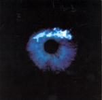

| Artist: | RAIN |
| Title: | Cerulean Blue |
| Label: | Telos Music |
| Length(s): | 55 minutes |
| Year(s) of release: | 2004 |
| Month of review: | [10/2005] |
| 1) | The Lammas Lands | 8.58 |
| 2) | Parsifal | 6.08 |
| 3) | Starcrossed | 4.53 |
| 4) | The Silver Apples Of The Moon | 7.38 |
| 5) | Light And Magic | 10.53 |
| 6) | Jerusalem | 9.13 |
| 7) | Cerulean Blue | 6.35 |
We are back in New York City, with the narrator and the string orchestra continuing on Parsifal. The choir vocals contribute to the moody atmosphere on this album, as do the saxes. The recording is excellent, very professional sounding. The second half of the track reminds more of Roger Waters, but with a warmer voice. The sax continues to line the music with its tones, and there is even some church organ.
Starcrossed continues the story line, the song itself has elements of the more pop oriented side of Yes and Jon Anderson. It is driven by the roll of the snare drum. This is more in the singersongwriter vein than pure prog (but who cares), and it has a certain upliftingness. The Silver Apples Of The Moon is the first track to really rock, and become intense: for the most part the style has been an introspective, moody kind of music. This time, the vocalist shows the back of his tongue, and hearing it I can imagine him being enamoured by the likes of Roger Waters. Great.
Light And Magic continues the line of the album in an expected way. It is also the longest song on the album, just over ten minutes long. Comparisons to Porcupine Tree (at their most somber), No-Man, Blue Nile and Roger Waters are easy to make, although I would certainly not say Rain is a copycat of any kind. I prefer to hear the music liven up a bit, for variety, because on the average this is a very quiet album, with occasional outburst a few minutes before the end of the songs.
The choirs in Jerusalem, have a feel of the later Peter Hammill (like Everyone You Hold, say), sounding very warm in general. The percussion then takes hold of the song, with the snare taking the marching lead. There is something minimalistic about it, although the bag pipes have something to say too. Cerulean Blue is the closer of the album, and where most of the songs transition from the classical to pop/rock of some kind, this song stays in classical mode.